材料
※粉量を変えると自動計算されます
生地
フィリング
型
作り方
生地
STEP 1
仕込み水を作る
ぬるま湯に砂糖とドライイーストを加え、よく混ぜ合わせます。
ぬるま湯に砂糖とドライイーストを加え、よく混ぜ合わせます。
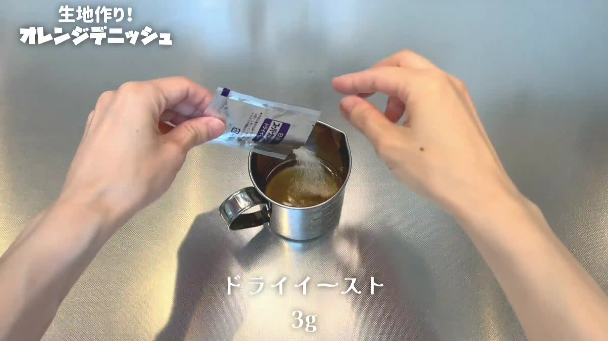
STEP 2
粉類を混ぜ、仕込み水を加えて混ぜる
強力粉と塩を混ぜたところに仕込み水を加え、ヘラで1分半ほど混ぜます。粉っぽさがなくなり、ひとまとまりになれば次へ進みます。
強力粉と塩を混ぜたところに仕込み水を加え、ヘラで1分半ほど混ぜます。粉っぽさがなくなり、ひとまとまりになれば次へ進みます。
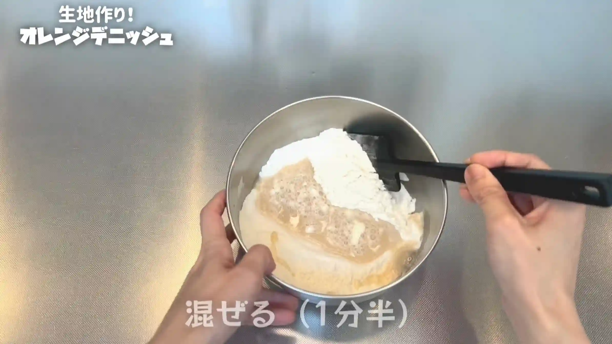
STEP 3
バターを加え、手で捏ねる
バターを加え、手で3分半ほど捏ねます。最初はバターがなじみにくくても、捏ねているうちに生地がまとまってきます。
バターを加え、手で3分半ほど捏ねます。最初はバターがなじみにくくても、捏ねているうちに生地がまとまってきます。
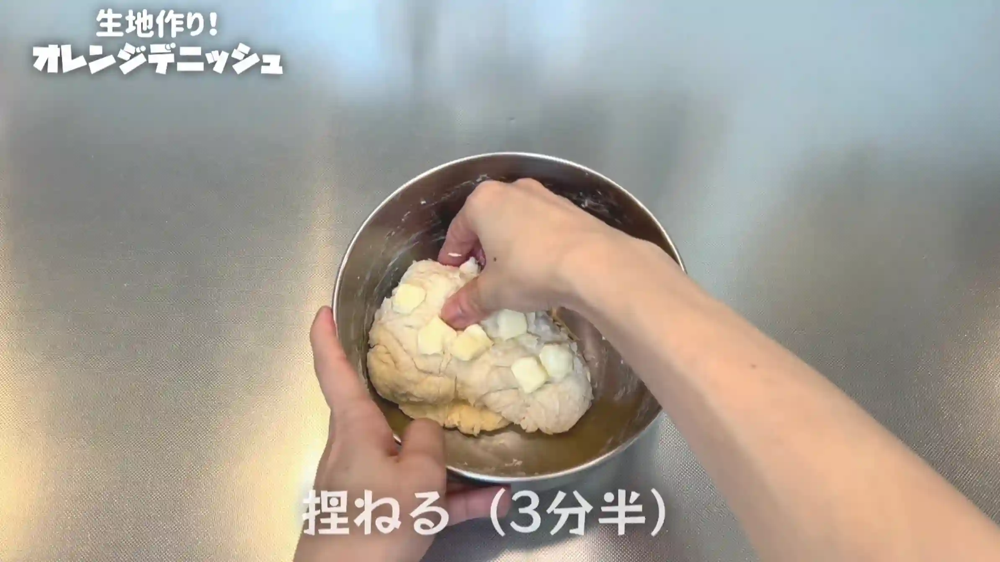
STEP 4
室温で15分おく
生地の表面を整え、乾燥しないようにラップをして、室温で15分ほど生地を休ませます。ここで休ませることで、少しずつ生地が扱いやすくなります。
生地の表面を整え、乾燥しないようにラップをして、室温で15分ほど生地を休ませます。ここで休ませることで、少しずつ生地が扱いやすくなります。
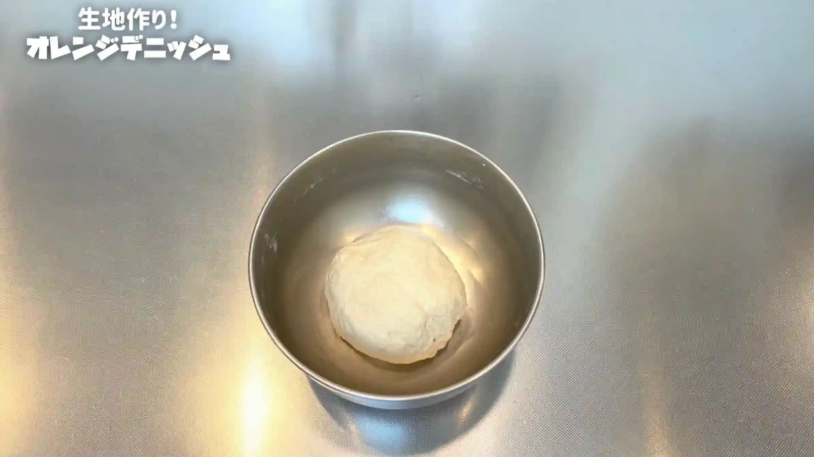
STEP 5
バターシートを作る
STEP 6
生地をボウルの中で1分叩く（[動画 07:55]）
生地をボウルの中で1分ほど叩きます。ボコボコとしていた生地の表面が、つるっとなめらかになったら次の工程へ進みます。
生地をボウルの中で1分ほど叩きます。ボコボコとしていた生地の表面が、つるっとなめらかになったら次の工程へ進みます。
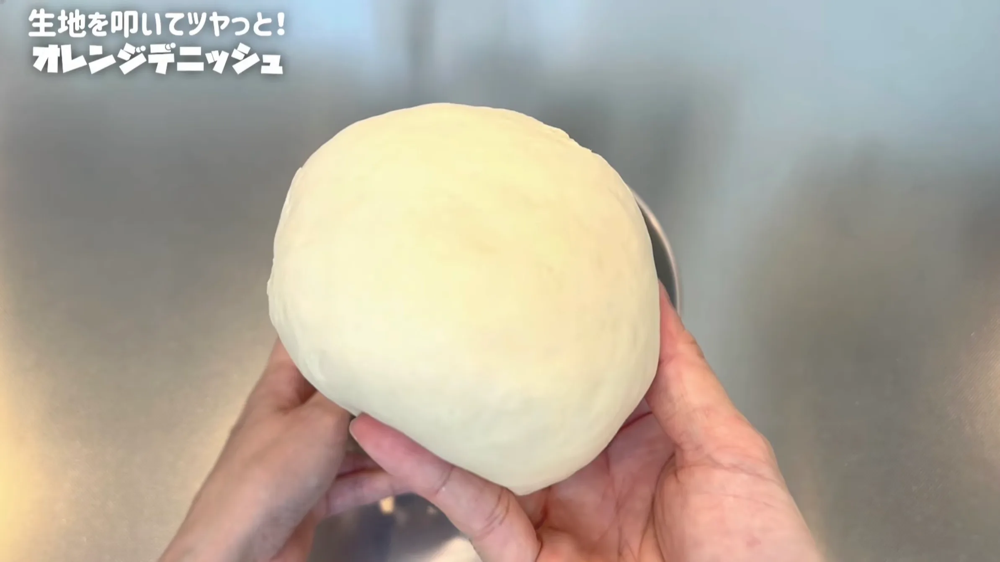
STEP 7
生地が2倍に膨らむまで室温でおく
乾燥しないようにラップをして、室温で一次発酵させます。40分〜60分ほどを目安に、生地が元の約2倍に膨らんだら次の工程へ進みます。
乾燥しないようにラップをして、室温で一次発酵させます。40分〜60分ほどを目安に、生地が元の約2倍に膨らんだら次の工程へ進みます。
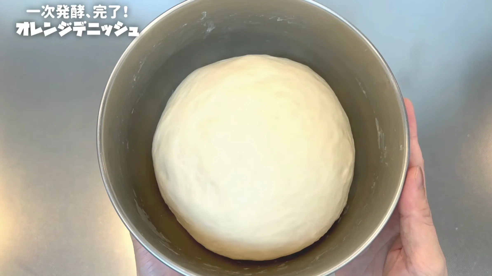
STEP 8
生地を広げ、真ん中にバターシートをおく（[動画 09:58]）
夏場はバターが溶けやすいため、手早く、生地をバターシート2枚分の大きさに伸ばして、中央にバターシートをのせます。画像のように上下の生地にゆとりを残しておくと、折り込み中に端からバターが出にくくなります。
夏場はバターが溶けやすいため、手早く、生地をバターシート2枚分の大きさに伸ばして、中央にバターシートをのせます。画像のように上下の生地にゆとりを残しておくと、折り込み中に端からバターが出にくくなります。
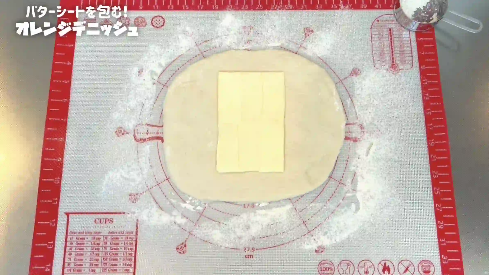
STEP 9
生地でバターシートを包む（[動画 11:06]）
バターシートを生地でくるみ、継ぎ目をしっかり閉じます。バターが外に出てしまうと、このあとの折り込みで作業がしにくくなるため、ぴったり合わせて押さえておきます。
バターシートを生地でくるみ、継ぎ目をしっかり閉じます。バターが外に出てしまうと、このあとの折り込みで作業がしにくくなるため、ぴったり合わせて押さえておきます。
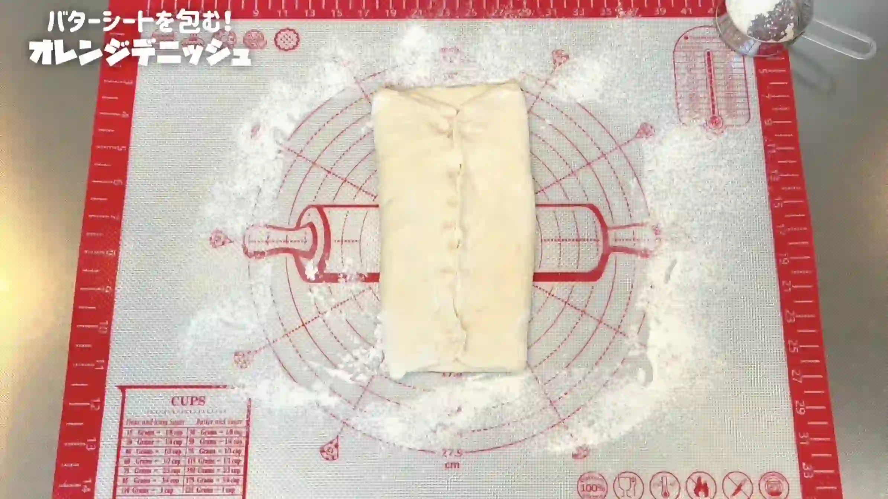
STEP 10
生地を「手のひら4つ分」に伸ばす（[動画 11:46]）
生地を横長に置き、まず手でやさしく押して、生地とバターを密着させながら厚みをそろえます。そこからめん棒で、手のひら4つ分ほどの長さまで伸ばします。
生地を横長に置き、まず手でやさしく押して、生地とバターを密着させながら厚みをそろえます。そこからめん棒で、手のひら4つ分ほどの長さまで伸ばします。
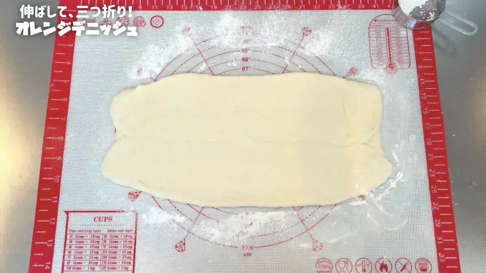
STEP 11
ドライフルーツを入れて三つ折りする（[動画 13:02]）
生地にドライフルーツを広げ、三つ折りにします。ここで三つ折りした生地をカットして重ねることで、折り込みは1回でも層を増やすことができます。
生地にドライフルーツを広げ、三つ折りにします。ここで三つ折りした生地をカットして重ねることで、折り込みは1回でも層を増やすことができます。
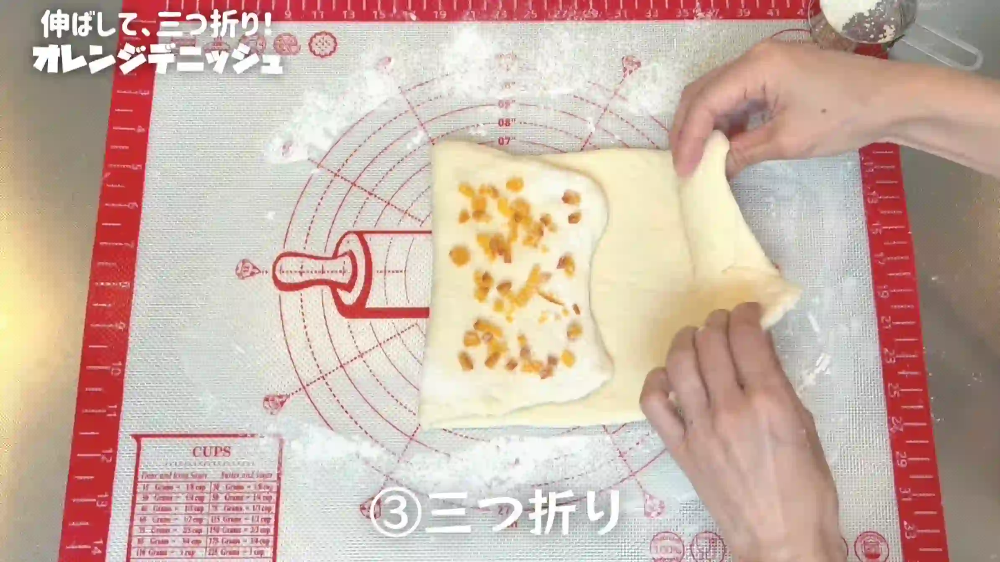
STEP 12
生地をラップで包み、30分冷凍する
夏場は手の熱や室温でバターが溶けやすいため、ここで生地をラップに包み、冷凍庫で30分ほどしっかり冷やします。一度生地を冷やしてバターを締めることで、次の成形がしやすくなります。冬場で室温が低く、生地がゆるくなっていない場合は、そのまま次の工程へ進んでも大丈夫です。
夏場は手の熱や室温でバターが溶けやすいため、ここで生地をラップに包み、冷凍庫で30分ほどしっかり冷やします。一度生地を冷やしてバターを締めることで、次の成形がしやすくなります。冬場で室温が低く、生地がゆるくなっていない場合は、そのまま次の工程へ進んでも大丈夫です。
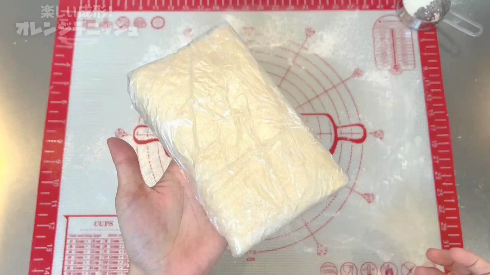
STEP 13
型にバターを塗る
パウンド型の内側にバターを塗っておきます。生地を入れる前に型全体に塗っておくことで、焼き上がったデニッシュを取り出しやすくなります。
パウンド型の内側にバターを塗っておきます。生地を入れる前に型全体に塗っておくことで、焼き上がったデニッシュを取り出しやすくなります。
STEP 14
生地を18㎝×18㎝に伸ばし、3等分する（[動画 14:27]）
冷凍庫から出した生地を18㎝×18㎝に伸ばし、3等分します。三つ折りした生地を3つに分けることで、これを重ねてさらに層を作っていきます。
冷凍庫から出した生地を18㎝×18㎝に伸ばし、3等分します。三つ折りした生地を3つに分けることで、これを重ねてさらに層を作っていきます。
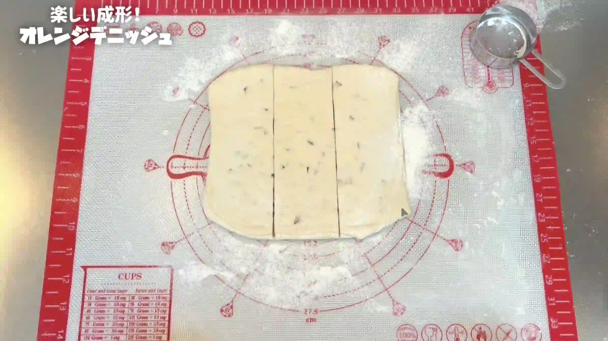
STEP 15
生地の真ん中に切れ込みを入れる（[動画 15:14]）
3等分した生地それぞれの中央に切れ目を入れます。厚みがあるため、切れ込みが浅いと生地が繋がったままになり、次の工程で生地を通してねじるときに作業しにくくなります。しっかり切れ込みを入れておくのがポイントです。
3等分した生地それぞれの中央に切れ目を入れます。厚みがあるため、切れ込みが浅いと生地が繋がったままになり、次の工程で生地を通してねじるときに作業しにくくなります。しっかり切れ込みを入れておくのがポイントです。
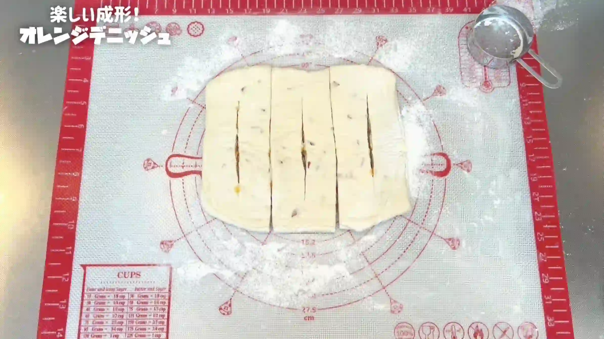
STEP 16
生地に水を塗って重ね、ねじる（[動画 15:43]）
生地に薄く水を塗ってから重ねます。水を塗ることで生地同士がくっつきやすくなります。重ねた生地を手綱こんにゃくの要領で1回もしくは2回ねじり、模様を作ります。今回は2回ねじっていますが、形を整えるのが少し難しいため、1回がおすすめです。
生地に薄く水を塗ってから重ねます。水を塗ることで生地同士がくっつきやすくなります。重ねた生地を手綱こんにゃくの要領で1回もしくは2回ねじり、模様を作ります。今回は2回ねじっていますが、形を整えるのが少し難しいため、1回がおすすめです。
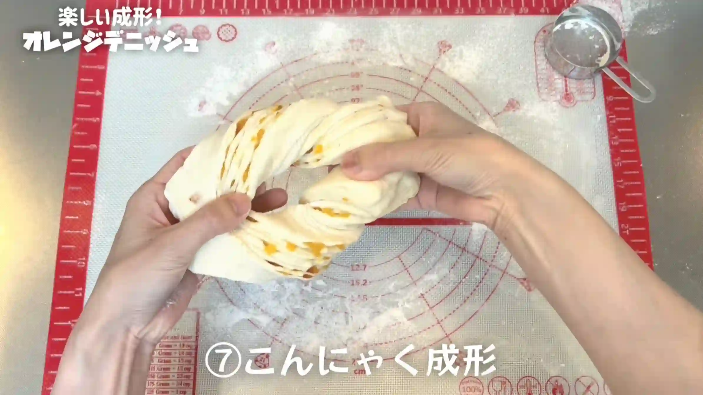
STEP 17
生地を型に入れ、ふっくらするまで室温でおく
冷凍していた生地は温度が低くなっているため、通常より発酵がゆっくり進みます。ここで焦らず、28℃前後の室温で約80分を目安に、全体がふっくらするまでしっかり二次発酵させます。発酵が足りないまま焼くとボリュームが出にくく、硬く仕上がるため、生地が十分にふっくらしてから焼き始めます。
冷凍していた生地は温度が低くなっているため、通常より発酵がゆっくり進みます。ここで焦らず、28℃前後の室温で約80分を目安に、全体がふっくらするまでしっかり二次発酵させます。発酵が足りないまま焼くとボリュームが出にくく、硬く仕上がるため、生地が十分にふっくらしてから焼き始めます。
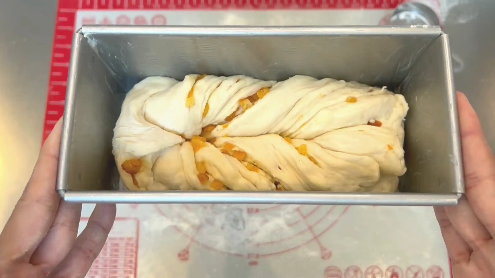
STEP 18
オーブンを250℃に予熱する
二次発酵が終わる頃に合わせて、オーブンを250℃に予熱しておきます。予熱が完了してから焼き始められるよう、発酵の様子を見ながら早めに準備しておきます。
二次発酵が終わる頃に合わせて、オーブンを250℃に予熱しておきます。予熱が完了してから焼き始められるよう、発酵の様子を見ながら早めに準備しておきます。
STEP 19
牛乳を塗り、オーブン210℃で30分焼く
表面に牛乳を塗り、210℃で30分焼きます。焼き色を確認しながら、ご家庭のオーブンに合わせて焼き時間を調整してください。
表面に牛乳を塗り、210℃で30分焼きます。焼き色を確認しながら、ご家庭のオーブンに合わせて焼き時間を調整してください。
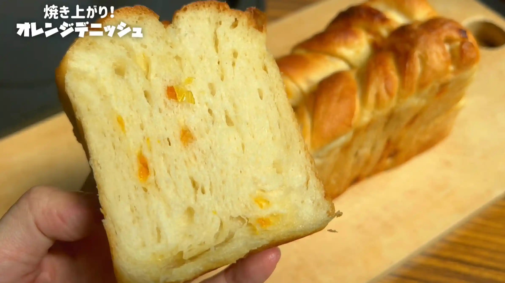
バターシート
STEP 1
ラップにバターを並べる
40gのバターを6枚にカットして、ラップを広げた上に長方形に並べていきます。切り分けるときは、バターに付いている目盛りを目安にすると、計量の手間がありません。
40gのバターを6枚にカットして、ラップを広げた上に長方形に並べていきます。切り分けるときは、バターに付いている目盛りを目安にすると、計量の手間がありません。
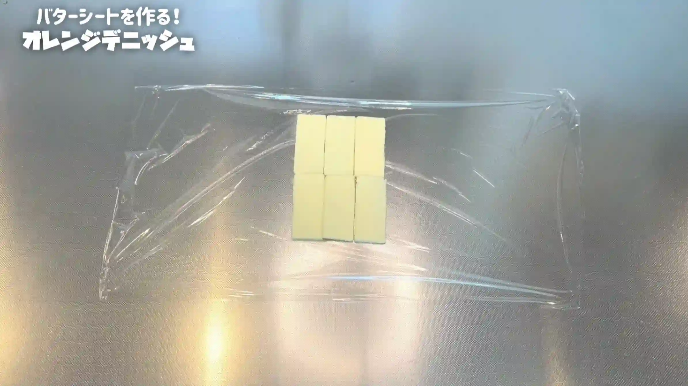
STEP 2
ラップをピッタリ閉じて、めん棒で平らにならす
並べたバターに合わせてラップをぴったり閉じ、上からめん棒で押して、バターの継ぎ目をなくします。手のひらほどの長方形になればOKです。
並べたバターに合わせてラップをぴったり閉じ、上からめん棒で押して、バターの継ぎ目をなくします。手のひらほどの長方形になればOKです。
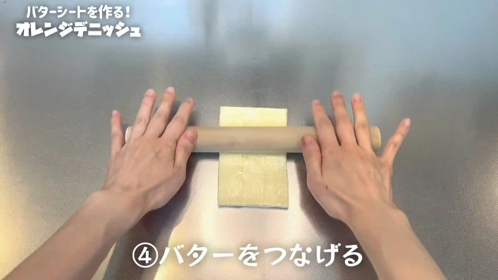
STEP 3
冷凍する
できあがったバターシートを冷凍庫で冷やします。生地に包むときにバターがやわらかくなりすぎないよう、しっかり冷やしておきます。
できあがったバターシートを冷凍庫で冷やします。生地に包むときにバターがやわらかくなりすぎないよう、しっかり冷やしておきます。
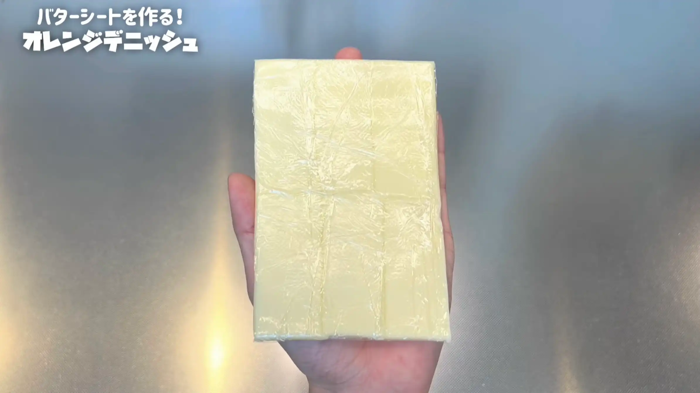
動画でチェック
おいしく作るためのワンポイントコラム
こんにちは、おなおドーナツです！
今回はパウンド型を使って焼き上げる、サクサクで香ばしい『夏のオレンジデニッシュ』を作っていきます！焼き立てのあの良い香りと贅沢な食感がたまらなくて、作るとあっという間になくなってしまう自慢のレシピです。おいしく仕上げるための大切なポイントを3つにまとめました。
① サクサク食感のコツ
少ない折り込み回数でサクサクの食感を出すために、三つ折りした生地をカットして重ねるのがポイントです。重ねる時に少しお水を塗ると、生地同士がしっかりくっつきます。こうすることで、折り込みは1回ですが、実質9層を作ることができます。
② 夏場の成形
夏場は手の熱や室温でどんどんバターが溶け出してしまうため、成形に進む前冷凍庫で30分冷やすのがコツ。一度生地をしっかり締めることで、夏場でもダレずに綺麗な模様を作ることができます。
③ 二次発酵のコツ
成形が終わると、早くできあがりが見たくてついついすぐ焼きたくなってしまいますが、生地を一度冷凍しているため、芯はまだ冷えた状態です。ここで焦って焼いてしまうと、ボリュームが出ずに硬いパンになってしまいますので、28℃前後の室温で大体80分間ゆっくり発酵させるのがポイント。焦らずふっくらするまでしっかり待つのが、美味しく焼き上げるコツです。
デニッシュはおうちで作るにはハードルが高いイメージがありますが、それぞれの工程がとても楽しいパンですよね！焼き立てのサクサク食感は格別です！それでは、おうちパン作りの時間を一緒に満喫しましょう！
今回はパウンド型を使って焼き上げる、サクサクで香ばしい『夏のオレンジデニッシュ』を作っていきます！焼き立てのあの良い香りと贅沢な食感がたまらなくて、作るとあっという間になくなってしまう自慢のレシピです。おいしく仕上げるための大切なポイントを3つにまとめました。
① サクサク食感のコツ
少ない折り込み回数でサクサクの食感を出すために、三つ折りした生地をカットして重ねるのがポイントです。重ねる時に少しお水を塗ると、生地同士がしっかりくっつきます。こうすることで、折り込みは1回ですが、実質9層を作ることができます。
② 夏場の成形
夏場は手の熱や室温でどんどんバターが溶け出してしまうため、成形に進む前冷凍庫で30分冷やすのがコツ。一度生地をしっかり締めることで、夏場でもダレずに綺麗な模様を作ることができます。
③ 二次発酵のコツ
成形が終わると、早くできあがりが見たくてついついすぐ焼きたくなってしまいますが、生地を一度冷凍しているため、芯はまだ冷えた状態です。ここで焦って焼いてしまうと、ボリュームが出ずに硬いパンになってしまいますので、28℃前後の室温で大体80分間ゆっくり発酵させるのがポイント。焦らずふっくらするまでしっかり待つのが、美味しく焼き上げるコツです。
デニッシュはおうちで作るにはハードルが高いイメージがありますが、それぞれの工程がとても楽しいパンですよね！焼き立てのサクサク食感は格別です！それでは、おうちパン作りの時間を一緒に満喫しましょう！


今回は、パウンド型を使い、折り込み1回でサクサク食感に焼き上げる「夏のオレンジデニッシュ」のご紹介です！夏場は難易度が上がるデニッシュですが、少しの工夫でおうちでも気楽に挑戦できる、とっておきのレシピです。
コラムでは「サクサク食感のコツ」「夏場の成形」「二次発酵のコツ」の3つのコツをご紹介します。